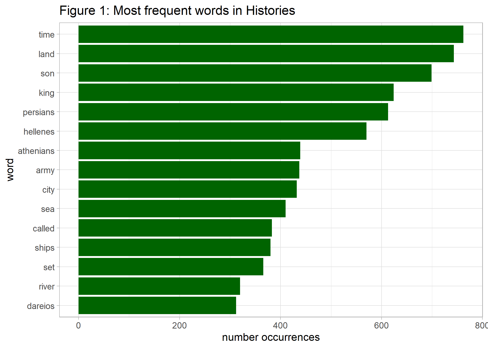

Herodotus’ Histories
21 May 2022 (first version 13 May 2022)
#Preliminaries:
knitr::opts_chunk$set(message=FALSE, warning=FALSE, eval = FALSE) #set eval = TRUE when run first
rm(list=ls())
library(tidyverse)
library(tidytext)
library(gutenbergr)
library(ggwordcloud)
library(topicmodels)
library(ldatuning)
library(ggsci)
theme_set(theme_light())Introduction
Herodotus (484 – 425 BC), the first known author doing systematic investigation of historical events, is famous for his important work on the Greco-Persian wars: Histories, originally meaning ‘critical inquiry,’ is therefore foundational to the Western historian tradition. The text is so profound that it accompanied the well known journalist and author Ryszard Kapuściński on his journeys across the globe. The book is on my reading list for some time now.
However, probably due to its old age the book is not very easy to digest. How can we use data science to have a first impression of the book content? Fortunately, text mining tools are available for natural language processing that can help us doing the job. Interesting sources concerning text mining in R are eg. LADAL and Automated Content Analysis with R. Data scientists interested in history may find Programming Historian quite illuminating. But now let us play a little bit with the text using tidytext.
Word Count
One first way to look at the ‘Histories’ is by using the number of words. What are the most prevalent words in the book, after excluding stop word (ie. irrelevant words)?
#Download data:
#gutenberg_metadata
#gutenberg_works(str_detect(title, "Herodotus"))
#hist_in <- gutenberg_download(c(2707, 2456))
#saveRDS(hist_in, "hist_gut.rds")
hist_in <- readRDS("hist_gut.rds")
#preparation: add chapter-information to data:
hist_df <- hist_in %>%
arrange(desc(gutenberg_id)) %>%
mutate(chapter=case_when(str_sub(text, 1, 5)=="BOOK " ~ str_sub(text, 1, 9),
str_sub(text, 1, 8)=="NOTES TO" ~ str_sub(text, 1, 8))) %>%
fill(chapter) %>%
filter(str_sub(chapter, 1, 4)=='BOOK') %>% #removing footnotes
mutate(line=row_number(), chapter=if_else(str_sub(chapter, 9,9)=='T', str_sub(chapter, 1,7), chapter),
chapter=as_factor(chapter))
#tidy + clean data: exclude stop words + numbers
hist_tidy <- hist_df %>%
unnest_tokens(word, text) %>% # -> tidy data
anti_join(stop_words) %>% # exclude stop words
filter(is.na(as.numeric(word))) %>% # exclude numbers
filter(!word %in% c("thou", "thee", "thy", "ye")) #drop very frequent old words not detected by stop_words
#create wordcloud (as shown above):
set.seed(42)
hist_wordcloud <- hist_tidy %>%
group_by(word) %>%
summarize(num=n(), .groups="drop") %>%
arrange(desc(num)) %>%
slice(1:100) %>%
mutate(angle = 90 * sample(c(0, 1), n(), replace = TRUE, prob = c(80, 20))) %>%
ggplot(aes(label = word, size=num, angle=angle)) +
geom_text_wordcloud(shape="square") + #, ylim=c(0,1), xlim=c(0.25, 0.85)
theme_minimal() +
scale_size_area(max_size = 15)
ggsave(hist_wordcloud, file="p0_hist_wordcloud.png") # import plot via markdown
#plot word count as bar char:
p1_hist_tidy <- hist_tidy %>%
count(word, sort = TRUE) %>%
filter(n > 300) %>%
mutate(word = reorder(word, n)) %>%
ggplot(aes(n, word)) +
geom_col( fill='darkgreen') +
labs(y = 'word', x='number occurrences', title='Figure 1: Most frequent words in Histories')
ggsave(p1_hist_tidy, file="p1_hist_tidy.png") # import via markdown
We see that time, land, son and king are on the top of the list followed by the main cultural players of the story – the Persians and the Greek, represented by Hellenes and Athenians.
A more sophisticated approach of revealing representative document words, is to focus on important words that are most distinctive to each of the book’s 9 chapters. We do this by weighting the term frequency (tf) with the inverse document frequency (idf).
hist_tf_idf <- hist_df %>%
unnest_tokens(word, text) %>%
group_by(chapter, word) %>%
summarize(n=n()) %>%
bind_tf_idf(word, chapter, n) %>% #calculate inverse document frequency
arrange(desc(tf_idf))
p2_hist_tf_idf <- hist_tf_idf %>%
group_by(chapter) %>%
slice_max(tf_idf, n = 10) %>%
ungroup() %>%
mutate(tf_idf=tf_idf*100, word=reorder_within(word, tf_idf, chapter)) %>%
ggplot(aes(x=tf_idf, y=word, fill = chapter)) +
geom_col(show.legend = FALSE) +
scale_y_reordered() + #override ggplot default
facet_wrap(~chapter, ncol = 3, scales = "free") +
scale_fill_simpsons() +
labs(x = "term frequency (in %) * inverse document frequency", y = 'words', title='Figure 2: Most distinctive words per chapter')
ggsave(p2_hist_tf_idf, file="p2_hist_tf_idf.png") 
These most distinctive words per chapter show a strong emphasis on geographical and biographical details, as expected in historical literature. For example, the second book deals to large extent with Egypt, which can easily seen by the top keywords.
Topic Modeling
How can we access content of the book in a more meaningful way by using abstract topics? We do so by applying topic modeling, a statistical framework for unsupervised classification that discovers topics occurring in a collection of documents (here: chapters). We use Latent Dirichlet Allocation (LDA), a typical approach for topic modeling, in order to automatically find both associations between words and the topics, and associations between topics and the book’s nine chapters. Although the number of topics are a priori unknown and serve as an input for the algorithm, there are different approaches to automatically determine the optimal number of topics. So let us first figure out the relevant topic number at first.
#prepare data fro LDA
hist_dtm <- hist_tidy %>%
count(chapter, word) %>%
cast_dtm(term=word, document=chapter, value=n)
ldatuning.metriken <- FindTopicsNumber(hist_dtm, topics = seq(from = 2, to = 15, by = 1), metrics = c("Griffiths2004", "CaoJuan2009", "Arun2010", "Deveaud2014"), method = "Gibbs", control = list(seed = 42), mc.cores = 2)
#What is the optimal number of topics to consider? Well, there are different ways to approach this problem, by maximizing dissimilarity between topics.
#Plot metrics:
#FindTopicsNumber_plot(ldatuning.metriken)
#use ggplot:
p3_top_num <- ldatuning.metriken %>%
pivot_longer(cols=c(Griffiths2004, CaoJuan2009, Arun2010, Deveaud2014), names_to='metrics') %>%
group_by(metrics) %>%
mutate(min_val=min(value), max_val=max(value), value_norm=(value-min_val)/(max_val-min_val)) %>%
mutate(opt=case_when(metrics %in% c("CaoJuan2009", "Arun2010") ~ 'minimize', TRUE ~ 'maximize')) %>%
ggplot(aes(x=topics, y=value_norm)) +
geom_line(aes(color=metrics), size=2) +
scale_x_continuous(breaks = c(2:15)) +
scale_color_simpsons() +
facet_wrap(~ opt, ncol=1) +
labs(y=NULL, x='number of topics', title="Figure 3: Metrics to choose topic number")
ggsave(p3_top_num, file="p3_top_num.png") 
Given criteria above we choose 8 as the number of topics in Histories and use them as the input for our final LDA. The result will allow us to extract the most distinctive words for each of the generated topics.
#LDA with 8 topics:
hist_lda <- LDA(hist_dtm, k = 8, control = list(seed = 42), method="Gibbs")
#word topic association (beta):
topic_word <- tidy(hist_lda, matrix = "beta")
#visualize topics with top-10 word-probabilities per chapter
p4_topic_word <- topic_word %>%
group_by(topic) %>%
slice_max(beta, n = 10) %>%
ungroup() %>%
mutate(term=reorder_within(term, beta, topic)) %>%
ggplot(aes(x=beta, y=term, fill = topic)) +
geom_col(show.legend = FALSE) +
scale_y_reordered() +
scale_fill_material("deep-orange") + #cyan
facet_wrap(~topic, ncol = 2, scales = "free") +
labs(x = "beta (term frequency)", y = "term", title='Figure 4: Most important words per topic')
ggsave(p4_topic_word, file="p4_topic_word.png") 
One approach to understand the 8 topics is to look at their most important words. We can see that topic 7 contains words such as ‘son,’ ‘time,’ ‘king’ – words that are also most prevalent overall as shown above. How are the 8 topics distributed over the nine chapters?
#Association between Documents & Themen: (gamma)
doc_topic <- tidy(hist_lda, matrix = "gamma") %>%
mutate(document=as_factor(document))
#visualize the assiciation between topics and chapter:
p5_doc_topic <- doc_topic %>%
ggplot(aes(y=as.factor(topic), x=document, fill=gamma)) +
scale_fill_material("blue-grey") +
geom_tile(colour="white") +
theme_minimal(base_size = 8) +
labs(title="Figure 5: Relationship between topics and chapters", fill="gamma", y="topic", x="chapter")
ggsave(p5_doc_topic, file="p5_doc_topic.png") 
A visual inspection suggests all chapters are a mixture of topic 4 and 7 + some individual component. Whereas topic 7 captures ideas of ancestry, topic 4 also contains words that are associated with religion. We also see that the chapters 2-3 and 8-9 seem to have some overlap in their content.
So far, we have used tools to figure out what the Histories are about. According to Kapuściński (2007) the main theme of Histories can be described by the form of following 3 rules, which governed antiquity, in comparison with the modern world:
- The law of vengeance applies.
- Human happiness is not permanent.
- No one can escape fate, even not a god.
From today’s perspective these rules, especially 1 and 3, seem very fatalistic, but they governed peoples life with cycles of crime and punishment over a long period of time. If you know how to derive such an interpretation with text mining methods, please let me know.
One last aspect worth discussing is the fact that Herodotus had a Hellenian background. Was his description of the Persian-Greek conflict culturally biased and how can data analytics support detecting this?
Sentiment Analysis
In order to tackle this question we use a sentiment word lexicon in which words are classified as positively or negatively. Are the terms ‘Persian,’ ‘Hellenic’ and ‘Athenian’ to the same extent associated with positive/negative words in Histories?
As a first step we generate bi-grams (or word pairs), and extract neighboring words of the terms Persia, Hellen, Athen, reflecting different cultures. Then these neighboring words are matched with the sentiment lexicon and the number of sentiments are summed up for each of the 3 cultures.
#remove stop words before calculating bi-grams:
bg_herod <- hist_df %>%
unnest_tokens(word, text) %>%
anti_join(stop_words) %>% # exclude stop words stop_words
filter(is.na(as.numeric(word))) %>% # exclude numbers
filter(!word %in% c("thou", "thee")) %>% #drop very frequent old words not detected by stop_words
group_by(chapter, line) %>% #undo unnest words
summarize(text = str_c(word, collapse = " ")) %>%
ungroup() %>%
unnest_tokens(bigram, text, token = "ngrams", n = 2) %>% #nest n-grams
count(bigram, sort = TRUE)
#Which words are associated with the persian, greek or the athenian culture?
#dominate positive or negative sentiments?
#function to create bi-grams containing specific values:
cult_fct <- function(x) {
y <- bg_herod %>%
filter(str_detect(bigram, x)) %>% #bi-grams containing "persian"
separate(bigram, c("word1", "word2"), sep = " ") %>%
mutate(culture=x, word1 = if_else(!str_detect(word1, x), word1, NA_character_ ),
word2 = if_else(!str_detect(word2, x), word2, NA_character_ )) %>%
unite(word1, word2, col=bigram, na.rm = TRUE) %>%
filter(bigram!='')
return(y)
}
comp <- c('persia', 'hellen', 'athen')
#run function
comp_cult <- comp %>%
map(cult_fct) %>%
bind_rows()
#sentiment analysis:
sent_bing <- get_sentiments("bing")
p6_comp_cult <- comp_cult %>%
mutate(word=bigram) %>%
inner_join(sent_bing, by="word") %>%
group_by(culture, sentiment) %>%
summarize(n=sum(n)) %>%
ggplot(aes(x=n, y=culture , fill = sentiment)) +
geom_bar(stat="identity", position = "dodge") +
labs(x = "number sentiments", y = "culture", title='Figure 6: Total number of sentiments by culture')
ggsave(p6_comp_cult, file="p6_comp_cult.png") 
The results show that negative sentiments dominate all 3 cultures, compared to positive ones. However, it is easy to see that in relation to the total number of sentiments in each culture, the negative sentiments are actually more pronounced for the terms Hellenian and Athenian. So our results do not suggest that Herodotus’ Histories are culturally biased in favor of the Greek culture.
Wrap Up
We have seen how to use text mining tools together with visualization in order to get a first impression of The Histories. In addition to analyzing words, we have seen how to generate abstract topics from text data. Also sentiment analysis was applied to see whether Herodotus’ description was positively biased towards the Greek culture.
Is the book worth reading after all? After mining Histories the book will certainly stay on my reading list.